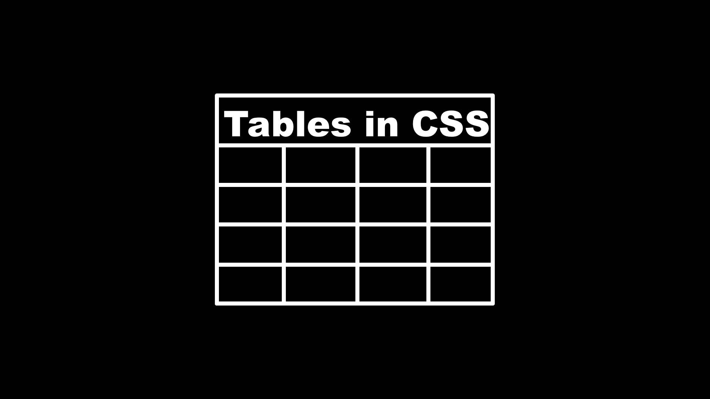
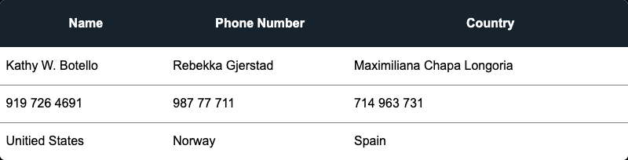

Styling HTML Tables in CSS
Tables in HTML play an important role in laying out complex sets of data. By default the table styling is boring, with this guide learn how to create awesome tables.

Overview
CSS Tables are formed out of four main elements, <table>, <tr>, <th>, and <td>.
- Table Element
- Defines the Table container, all elements are contained in this tag
- Table Row
- Table Row (TR) is the element where the columns are placed into
- Table Header
- Table Header (TH) is a column designated for the head of the table. Using a unique element allows for easier styling
- Table Data
- Table Data (TD) is the main column element for a table
Other Elements
There are two other elements that are not required to use but make the styling of your data much easy. They are the <thead> and <tbody> elements, all that they do is specify which rows are part of the body and head. If you do not declare these elements then they default to the tbody.
Usage
Using tables is very straightforward, put all of the contents into the main tag. Wrap each row in a <tr> tag. The tags inside of the <tr> tag can be either a <th> or a <td> tag. For the column you want to style as the header, make sure to put all of the elements in a <th> tag. Wrap each column in a <td> tag for the rest of the data.
1<table>
2 <thead>
3 <tr>
4 <th class="c">Name</th>
5 <th class="c">Phone Number</th>
6 <th class="c">Country</th>
7 </tr>
8 </thead>
9 <tbody>
10 <tr>
11 <td>Kathy W. Botello</td>
12 <td>Rebekka Gjerstad</td>
13 <td>Maximiliana Chapa Longoria</td>
14 </tr>
15 <tr>
16 <td>919 726 4691</td>
17 <td>987 77 711</td>
18 <td>714 963 731</td>
19 </tr>
20 <tr>
21 <td>Unitied States</td>
22 <td>Norway</td>
23 <td>Spain</td>
24 </tr>
25 </tbody>
26</table>
Result
| Name | Phone Number | Country | | -------------------------- | ------------ | ------------- | | Kathy W. Botello | 919 726 4691 | United States | | Rebekka Gjerstad | 987 77 711 | Norway | | Maximiliana Chapa Longoria | 714 963 731 | Spain |
This table is styled with PicoCSS, which is a great option (along with any other CSS framework) if you don't want to manually style your entire page.
Styling the table

Breaking out each section of the table using the <th> and <td> tags makes styling very intuitive. The best way I have found to style the table it to style the tags directly so the entire page's tables all look the same. Here is the code for the table above.
1table {
2 border-spacing: 1;
3 border-collapse: collapse;
4 background: white;
5 border-radius: 6px;
6 overflow: hidden;
7 max-width: 800px;
8 width: 100%;
9 margin: 0 auto;
10 position: relative;
11 font: 400 14px "Calibri", "Arial";
12}
13
14table * {
15 position: relative;
16}
17
18table td,
19table th {
20 padding-left: 8px;
21}
22
23table thead tr {
24 height: 60px;
25 background: #17232c;
26 color: #fff;
27 font-size: 16px;
28}
29
30table tbody tr {
31 height: 48px;
32 border-bottom: 1px solid #7d7d7d;
33}
34
35table tbody tr:last-child {
36 border: 0;
37}
Aligning table items
By default, all the text inside of the table will be right aligned, if you want to align the items in other way the best method is to create some custom classes. The classes below will align the text inside of a table td or th element by adding an l, c, or r class.
1table td,
2table th {
3 text-align: left;
4}
5
6table td.l,
7table th.l {
8 text-align: right;
9}
10
11table td.c,
12table th.c {
13 text-align: center;
14}
15
16table td.r,
17table th.r {
18 text-align: center;
19}
Styling specific rows
Styling specific rows can be useful when you want to create tables that have alternating rows or different parts of the data that need to look different for better readability. This can be done using the :nth-child selector like below.
1tbody > tr:nth-child(2n + 1) {
2 background-color: #fff;
3}
4
5tbody > tr:nth-child(2n + 2) {
6 background-color: #ddd;
7}
The :nth-child selector takes a single argument formatted with this <An+B> format. The A is the step size or how big your selection group is. The n is the representation of where the selector is and the +B is the offset.
In our example 2 is in place of A because we want to do every other element, n stays as n. Then +B is +1 and +2, +1 tells the browser to apply the style to the first element in the selection and the +2 tells it to apply the respective style to the second one.